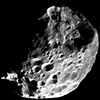
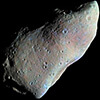
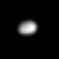

696342±65
1.9885E30
>21
В составе Солнца всего 1.48% элементов тяжелее Водорода и Гелия
69911±6
1.898E27
6.6-23.78
25362±7
8.681E25
13.03.1781
>8.49
Название планеты устоялось лишь спустя 70 лет после открытия. Среди предложений было имя Нептун.
24622±19
1.024E26
23.09.1846
8.6
6371.0
5.972E24
0
Планета с самой большой плотностью в Солнечной системе: 5.514 г/см**3. Здесь живет 7759 миллионов человек.
6051.8±1.0
4.8675E24
6.79
3389.5±0.2
6.4171E23
5.71
Известно не менее 240 метеоритов марсианского происхождения
2634.1±0.3
1.4819E23
13.03.1610
14.07
2574.7
1.3452E23
25.03.1655
>7.7
2439.7±1.0
3.3011E23
13.2
2410.3±1.5
1.0759E23
13.03.1610
12.42
1821.6±0.5
8.932E22
13.03.1610
>7.7
1737.1
7.342E22
4-6.3
Известно не менее 390 метеоритов с Луны и не менее 35 событий их падения (одно событие – много фрагментов).
1560.8±0.5
4.7998E22
13.03.1610
>7.7
1353.4±0.9
2.14E22
10.10.1846
>7.7
1188.3±0.8
1.3E22
18.02.1930
>11.06
Клайд Томбо открыл Плутон на снимках от 23 и 29 января 1930 г.
1163±6
1.66±0.02E22
21.10.2003
>7.7
798±6–816
4.01±0.04E21
28.12.2004
>7.7
788.4±0.6
3.4E21
11.01.1787
>7.7
763.8±1
2.307E21
23.12.1672
>7.7
761.4±2.6
3.08±0.09E21
11.01.1787
>7.7
734.5±2.8
1.81E21
25.10.1671
>7.7
715−739
4.4E21
31.03.2005
>7.7
615±25
1.75±0.07E21
17.07.2007
>7.7
Был крупнейшим телом Солнечной системы без названия до 05.02.2020. В 2019 году находился в 88 а.е. от Солнца и продолжает удаляться со скоростью 1.1 км/с. Имеет спутник Сянлю.
606.0±0.5
1.59±0.015E21
13.04.1978
>7.7
584.7±2.8
1.28±0.03E21
24.10.1851
>7.7
578.9±0.6
1.25±0.02E21
24.10.1851
>7.7
561.4±0.4
1.095E21
21.03.1684
>7.7
560.5±0.6
1.4±0.2E21
05.06.2002
>7.7
Кьюбивано, кандидат в карликовые планеты. Имеет спутник Вейвот
531.1±0.6
6.175E20
21.03.1684
>7.7
470
9.3835E20
01.01.1801
>11.7
467±24
18.06.2002
>7.7
Из наблюдений покрытия звезд в 2019 году получены оценки размера: 842 на 688 км
458±13
6.4±0.2E20
17.02.2004
>7.7
446.5±11
4.92±0.07E20
22.09.2004
>7.7
262.7±0.1
2.59E20
29.03.1807
>10.2
256±3
2.11±0.26E20
28.03.1802
>15.6
Третий по массе астероид Солнечной системы: 7% от массы пояса астероидов.
252.1±0.2
1.08E20
28.08.1789
>7.7
235.8±0.7
0.66±0.08E20
16.02.1948
>7.7
217±7
0.83±0.08E20
12.04.1849
>12
4-й (по объему и массе) астероид Солнечной системы. Имеет близкую к сферической форму и может быть кандидатом в карликовые планеты.
210±7
0.44E20
16.06.1989
>7.7
198.2±0.4
3.749E19
17.09.1789
>7.7
166±3
3.8±1.3E19
02.10.1910
>13.2
145±10
3.8±0.2E19
30.05.1903
>12.5
138.6±4
5.62±0.05E18
16.09.1848
>7.7
135.7±11
2.9±0.5E19
01.09.1804
>11.9
112.5±2
2.4±0.3E19
17.03.1852
>11.5
112±4
1.1E19
25.02.1892
>10.9
107±2.5
1.37±0.13E19
13.08.1847
>9.8

106.6±0.8
8.29±0.01E18
16.08.1898
>7.7
97±5.4
4.2E18
24.05.1981
>7.7
93
1.27±0.13E19
01.07.1847
>11.9
89.5±1.4
1.898E18
15.12.1966
>7.7
84−88
8.3E17
01.10.1866
>11.9
84
30.08.1992
>7.7
Первый транснептуновый объект, открытый после Плутона и Харона. Дал название классическим объектам пояса Койпера – кьюбивано
83.5±2
2.08±0.15E18
09.09.1892
>7.7
81±2
2.9E18
30.12.1985
>7.7
78.0 ± 4.7
2.2E18
02.08.1989
>7.7
64
6.6±0.8E18
18.10.1847
>9.6
59.5
2.9E18
08.12.1845
>10.3
58.1±1.8
5.27±0.01E17
18.12.1966
>7.7
49.3±2
4.3E17
05.03.1979
>7.7
49±1
1.7±0.02E18
15.11.1852
>10.1
46.8±4
5.6E17
03.01.1986
>7.7
43.1±2.7
1.59±0.02E17
01.10.1980
>7.7
40.7±1.5
1.37±0.02E17
01.10.1980
>7.7
26.4
1.03±0.04E17
12.11.1885
>10.5
19.65
4.8±4.2E16
15.05.2005
>7.7
19.017
4.5±4E16
15.05.2005
>7.7
15.85±0.25
26.06.2014
12.378
15.7
42±6E15
29.09.1884
>11.6
15.1±0.9
6.60±0.45E15
01.10.1980
>7.7
14.1±1.3
4.95±0.75E15
16.07.1990
>7.7
11.267
1.0659E16
18.08.1877
>7.7
8.42±0.02
6.69±E15
13.08.1898
6.112
8.2±2
2E15
08.07.1979
>7.7
6.33
1.65E16
28.06.2011
>7.7
6.2±0.18
1.476E15
12.08.1877
>7.7

6.266
2.5E16
30.07.1916
8.402
Первый посещенный космическим аппаратом (
Галилео) астероид. Был посещен 29.10.1991, фото сделаны с расстояния 5300 км на скорости 8 км/с.
5.75
2.2E14
25.12.1758
>29.8
5.5
7.5E15
26.06.2012
>7.7
3.8±0.8
77.93E12
01.05.2005
>7.7
2.9
1.4E14
11.10.1983
15.347
2.58±0.084
04.11.1969
9.350
2.4
23.03.1942
8.963
Фото астероида было получено КА Stardust 02.11.2002 с расстояния 3 км.
2.22±0.07
2E13
06.01.1978
>7.7
2.133
2.3E13
06.01.1978
>10.8
КА Stardust сблизился с ядром кометы 02.01.2004 с относительной скоростью 6.1 км/с. Фото сделано с расстояния 237 км.
2
9.98E12
20.09.1969
>9.8
Первые подробные фото получены КА Rosetta в промежуток 1–6 августа 2014 г.
1.516
5.05E13
04.01.1989
6.590
1.5
6.1E12
15.11.2006
9.881
1.45±0.03
01.06.2004
>7.7

1.3±0.4
3E13
24.10.2004
>7.7
0.94
2.6E13
14.09.1951
6.747
0.82
7.8E15
27.05.1992
10.931
0.7
17.02.1994
>7.7
Спутник астероида Ида, обнаружен 17.02.1994 на снимках АМС Галилео от 28 августа 1993 г. Стал первым прямым доказательством существования лун у астероидов.
0.66±0.02
2.49±0.05E12
20.05.1999
21.374
0.57±0.08
3E11
15.03.1986
>13
0.55
4E12
23.02.1950
6.994
Имеет вероятность столкновения с Землей в 2880 году.
0.432
4.5E11
10.05.1999
4.663
Миссия Hayabusa2 прибыла к астероиду 27.06.2018.
0.39
3.645E12
11.04.1996
5.162
Цель миссии DART. Старт запланирован на 2021 г.
0.33±0.06
6E12
03.03.2009
>7.7
0.245
7.329E10
11.09.1999
5.096
Имеет высокую вероятность столкновения с Землей в 2175–2199 гг. 03.12.2018 к астероиду приблизился КА OSIRIS-REx.
0.22±0.04
25.10.2011
5.189
0.205
7.8E10
25.11.1998
10.865
0.173
3.51±0.1E10
26.09.1998
4.637
Посещен миссией Хаябуса в октябре 2005 г. Капсула с ~1500 частицами астероида (почти все менее 10 мкм) приземлилась в Австралии 13.06.2010
0.17
6.1E10
19.06.2004
5.688
Имеет вероятность столкновения с Землей в 2060–2105 гг. До 2013 г. вероятность столкновения была сильно переоценена.
Этот список тел Солнечной системы содержит:
- Все известные тела в гидростатическом равновесии, то есть, имеющие близкую к сферической форму (39 штук)
- Все известные тела c радиусом от 400 км и более (36 штук)
- Все известные тела с картой поверхности (включая 11 астероидов, Цереру, Плутон и его спутники).
- Все тела, посещенные космическими аппаратами,
за исключением комет
21P/Джакобини – Циннера,
26P/Григга – Скьеллерупа,
C/2006 P1 (Макнота).
- Некоторые спутники планет
(таблицы
физических
свойств), в том числе изображения которых были получены с борта КА.
- Некоторые тела с изображением, полученным методом радиолокации,
в том числе с трехмерной моделью
(см. Радиолокационная астрономия,
Пресс-релизы изображений,
Planetary Radar Science Group).
- Некоторые тела c изображением, полученным при помощи адаптивной оптики,
метода покрытия звезд
и других способов восстановления формы тел.
- Некоторые примечательные астероиды,
включая сближавшиеся с Землей.
А также: Статистика тел Солнечной системы (файл создается автоматически)
Замечания:
- Спутник Юпитера Ганимед и спутник Сатурна Титан больше по размерам,
чем Меркурий. Все же, ближайшая к Солнцу планета, обладая железным ядром, массивнее их вместе взятых.
- Ядро кометы Галлея было снято космическим аппаратом Джотто
и КА Вега 2 в марте 1986 г. Размеры - 15×8 км, масса - 2.2×1017 г (220 млрд тонн).
- Первым астероидом, которого посетил спутник, стал астероид 951 Гаспра.
29 октября 1991 года к ней подлетел КА Галилей.
- У астероида Ида есть спутник Дактиль.
Эта система была второй, посещенной космическим аппаратом, тем же Galileo. Сближение на 2390 км произошло в августе 1993-го.
Дактиля нашли позже, в феврале 1994, по анализу снимков, сделанных во время сближения.
- Астероид 5535 Аннафранк был сфотографирован в 2002 году в ходе миссии
Stardust с расстояния 3079 км.
- Астероид 9969 Брайль сфотографирован
КА Deep Space 1 с расстояния 14000 км, хотя 29 июля 1999 года они сближались на расстояние всего лишь 26 км.
Размеры этого астероида - 2.1×1×1 км, масса - 7.8 × 1015 г (7.8 млрд тонн).
Качество изображения – не лучшее:

- Астероид (25143) Итокава был посещен японским КА "Хаябуса" в сентябре-ноябре 2005 года.
После относительно успешного сбора проб вещества астероида на Землю была отправлена капсула с образцом. Она приземлилась в Австралии 13 июня 2010 года.
Размеры астероида весьма скромные: 535×294×209 метров. Масса - 3.5×1013 г (35 млн тонн).
- 13 декабря 2012 года китайским КА Чанъэ-2 был осуществлен пролет возле астероида
(4179) Таутатис. У него уже был "портрет", полученный с помощью
обсерватории Голдстоун и построена трехмерная модель.
Размеры Таутатиса - 4.5×2.4×1.9 км, масса - 5×1016 г (50 млрд тонн).
- Аппарат Европейского космического агенства Розетта, встретившись с Лютецией и Штейнсом, долетел до кометы
Чурюмова-Герасименко в августе 2014 года.
- Примерно 6% околоземных астероидов, как предполагается, яввляются выродившимися кометами.
На снимке ниже изображен коллаж из четырех снимков Нептуна, полученных КА Вояджер-2 24 августа 1989 года с паузами в 9 минут.
Яркие точки – спутник Деспина
в движении, отбрасывающий тень на поверхность Нептуна. Яркость Деспины для наглядности искусственно увеличена.
Посмотрите на оригинальные изображения!
(Астрокартинка дня от 16.01.2014).
Для справки: размеры Деспины - 180×148×128 км, а масса - 2.2×1018 кг (2200 трлн тонн).
Сравнение масштабов астероидов и комет:
На этой картинке в масштабе изображены 17 из 18 астероидов, сфотографированные до августа 2014 года (не представлена Веста, которая заняла бы в масштабе три таких изображения).
Кроме масштаба, также показано альбедо (характеристика отражательной способности поверхности) этих космических тел.
Размер ядер комет – 0.2–45 км. Красные треугольники – кометы семейства Юпитера, синие треугольники – долгопериодические кометы:

NEOWISE comet diameters vs. heliocentric distance at the time of observation by NEOWISE.
Тела Солнечной системы: индивидуальные страницы
Ссылки:
- Discovery and exploration of the Solar System;
Solar_System#Visual_summary
- Extraterrestrial liquid water
- Solar System Missions: карта текущих и предстоящих миссий в Солнечной системе, Olaf Frohn twitter.
- List of Solar System probes
- страница М. Брауна о карликовых планетах,
список возможных карликовых планет,
критерий "Clearing the neighbourhood".
- Астероиды, имеющие спутники,
контактные двойные (Johnston's Archive).
- AstDyS-2,
NEODyS-2.
- Database of Asteroid Models from Inversion Techniques (DAMIT) is a database of three-dimensional asteroid models that were derived using inversion techniques.
- Lowell astorbDB,
The Asteroid Orbital Elements Database.
- Низкая околоземная орбита: характеристики, delta v.
База данных Asterank,
База данных Space Reference,
таблица Δv для 17607 астероидов,
Asteroid mining.
- ESA Space Debris Office.
NASA Orbital Debris Program Office.
- Sentry: Impact Risk Data table.
Accessible NEAs.
PL SSD/CNEOS API,
example request.
- Список имен малых планет,
Список малых планет с именами.
- Asteroid Lightcurve Photometry Database
- Список групп малых планет
- Список тел Солнечной системы с наибольшими афелиями,
Distribution of trans-Neptunian objects, with semi-major axis on the horizontal, and inclination on the vertical axis.


{kind=link}